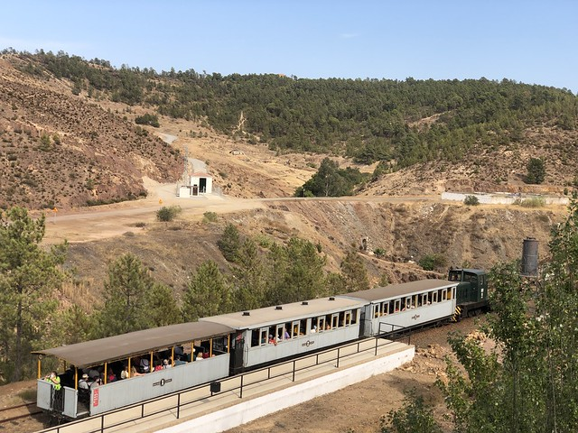
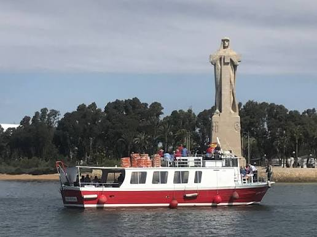
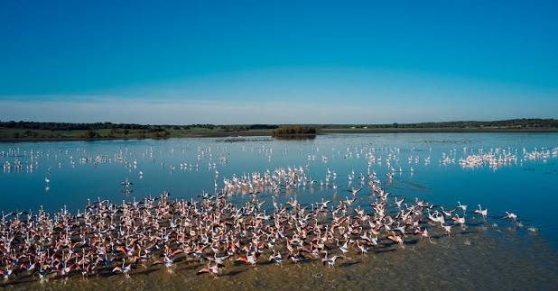
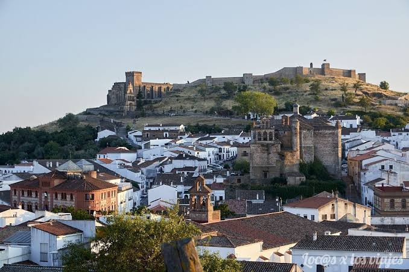
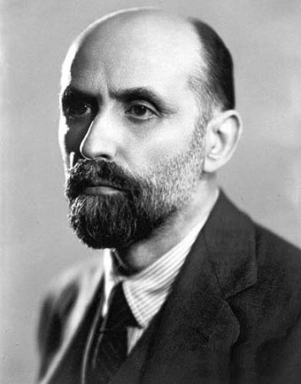
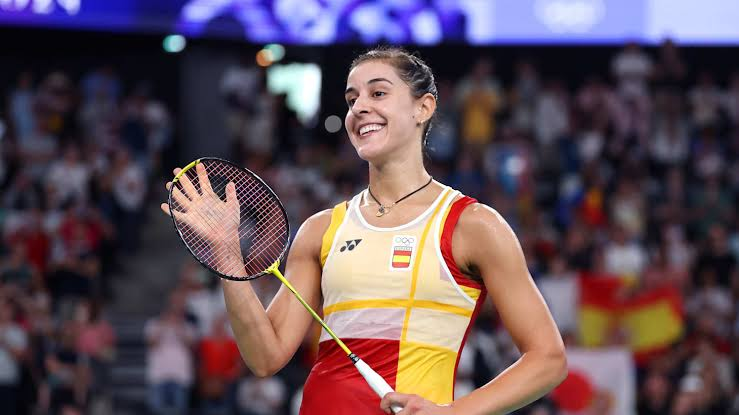
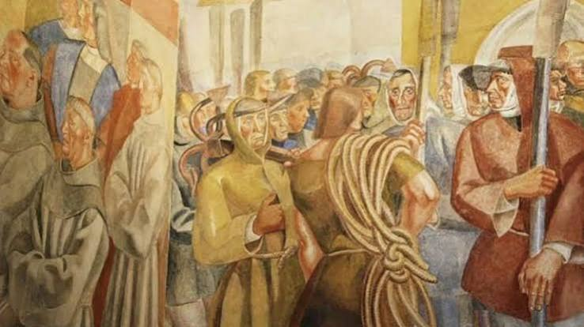
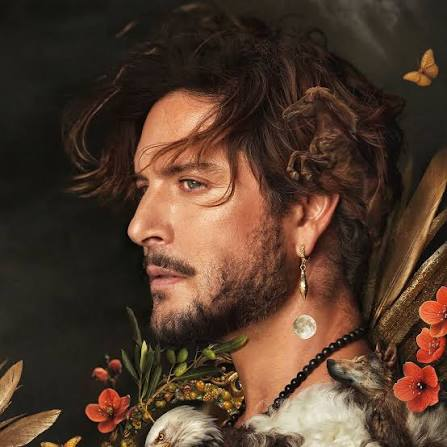
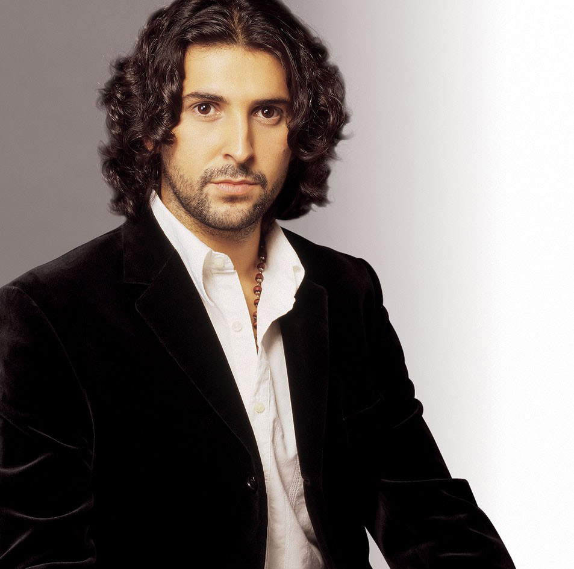

Tourist Activities in Huelva
Unforgettable experiences from the mining basin to the mouth of the Guadalquivir River.

Riotinto Mining Tourist Train
Travel 22 kilometers aboard restored 19th-century wooden locomotives and carriages at the Riotinto Mining Park. The route runs alongside the Rio Tinto, world-famous for the deep reddish color of its waters and studied by NASA for its similarity to the planet Mars.
The Journey on Video
Discover what it feels like to cross the Martian landscapes of the Riotinto Mining Basin aboard this historic railway.
Tip: The round-trip journey takes approximately 1 hour and 30 minutes.

Boat Tours & Sightseeing
Sail through the confluence of the Tinto and Odiel rivers, take a ferry across to the unspoiled Flecha del Rompido sandspit, or enjoy a sunset cruise.

4x4 Excursions in Doñana
Venture from Almonte and El Rocío into the marshes, mobile dunes, and woodlands of Doñana National Park, home to the Iberian lynx.

Hiking Among Chestnut Groves
Walk the signposted trails linking Galaroza, Castaño del Robledo, and Alájar through centuries-old forests and dry-stone walls.
Famous People from Huelva
World-renowned figures in literature, sports, art, and music born in our province.

Juan Ramón Jiménez
Poet from Moguer who won the 1956 Nobel Prize in Literature and wrote the celebrated prose poem Platero and I.
His House Museum in Moguer preserves his personal library, original manuscripts, and memorabilia from his life with Zenobia Camprubí.

Carolina Marín
Widely regarded as the greatest European badminton player in history: Olympic Champion, three-time World Champion, and seven-time European Champion.
Huelva's Sports Palace is named after her in recognition of her historic career and for bringing Huelva onto the global stage.

Daniel Vázquez Díaz
One of the most influential Spanish painters of the 20th century, master of Neo-Cubism and creator of the famous Frescoes of the Discovery at La Rábida.
His hometown of Nerva houses a modern art center dedicated to his work and 20th-century Spanish avant-garde movements.

Manuel Carrasco
Singer-songwriter from Isla Cristina, one of Spain's most beloved and successful pop artists, Favorite Son of Isla Cristina and Medal of Andalusia recipient.
His lyrics are deeply tied to the sea, Isla Cristina's carnival, and his Huelva roots, breaking historic stadium attendance records across Spain.

Arcángel
Francisco José Arcángel Ramos, flamenco singer born in Huelva capital, international benchmark of cante jondo and Latin Grammy winner.
An indisputable ambassador of fandangos de Huelva, he has brought both traditional and innovative flamenco to the world's most prestigious theaters.
Listen to the Musical Talent of Our Land
Enjoy a featured song by Manuel Carrasco and another by Arcángel.